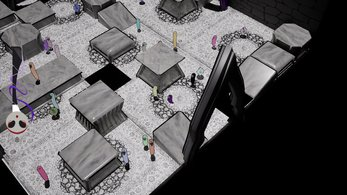
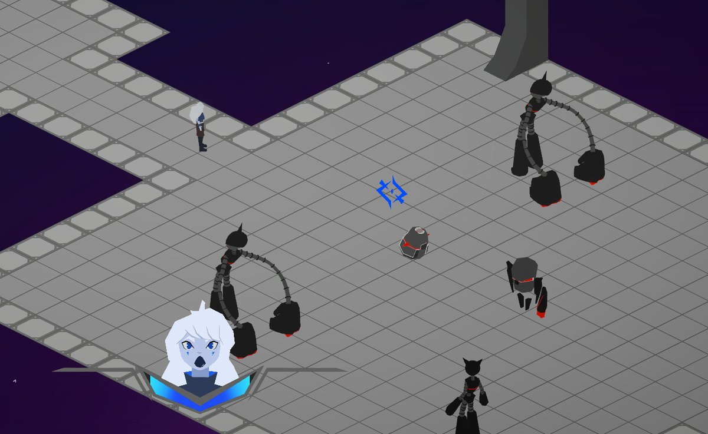

Estudiante de Diseño y Desarrollo de Videojuegos (UADE). Me enfoco en programación de gameplay, arquitectura de sistemas, multijugador y optimización. Busco oportunidades junior y proyectos para colaborar.
Soy game dev en formación. Me gusta construir mecánicas claras, feedback fuerte y sistemas reutilizables. Trabajo principalmente con Unity (C#) y también con Unreal (Blueprints / C++). Me interesa escribir código mantenible: arquitecturas orientadas a eventos, Service Locator, ScriptableObjects, object pooling y profiling.
En Juegos en Red trabajé con Photon PUN (sincronización, RPCs, roles por jugador) y desde ahí me interesa orientarme también hacia la ciberseguridad. En paralelo hago landing pages como freelance.
✅ Arquitectura event-driven y sistemas reutilizables
✅ Multijugador online con Photon PUN
✅ Optimización: pooling, GPU Instancing, menos GC
✅ Cámaras cinemáticas (Cinemachine) y VFX Graph
✅ Prototipos rápidos, UI / HUD, física y colisiones
✅ Trabajo en equipo (sprints)
Proyectos académicos y personales, individuales y en equipo.

Puzzle contrarreloj inspirado en "La máscara de la muerte roja" de Poe. Encarnás distintas almas, cada una con su máscara y habilidad, y escapás de "La Sombra" por caminos generados con RNG.

Dungeon crawler en equipo con intercambio entre dos personajes (Chip y Penny) que cubren las debilidades del otro. Combate frenético y estilo low poly.
Juego de supervivencia sobre un tren, con foco en arquitectura escalable y presentación cinematográfica.
Runner online para la materia Juegos en Red (UADE): un jugador controla las trampas y el resto compite por llegar a la meta.
Shooter por oleadas para la facultad, enfocado en rendimiento y buenas prácticas.
Juego de laberinto centrado en exploración, desafío y navegación.
Diseño y desarrollo landing pages para restaurantes de Buenos Aires, desde la propuesta hasta la puesta en producción: sitios responsive, rápidos y con reservas por WhatsApp.
Email: oliifogiel@gmail.com
LinkedIn: linkedin.com/in/oliverio-fogiel-8307902b4
Itch.io: oliverio-fogiel.itch.io
GitHub: github.com/oliveriofogiel